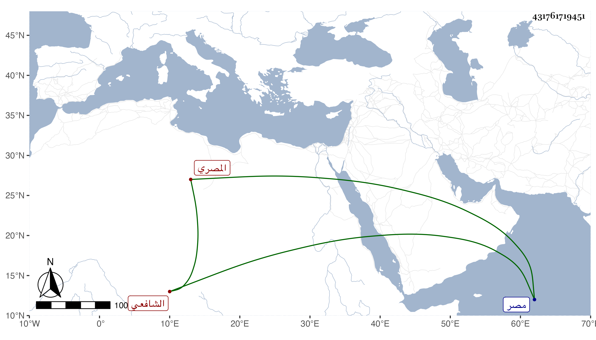

0902Sakhawi.DawLamic.ITO20230111-ara1.EIS1600.431761719451
Biography ID: 431761719451
549
محمد بن علي بن محمد بن محمد بن مسلم ناصر الدين المصري الشافعي ويعرف بابن مسلم كمحمد . ولد تقريبا سنة خمس وثمانين وسبعمائة بمصر ونشأ فقرأ القرآن عند الشهاب الأشقر وحضر دروس البلقيني ثم ولديه وغيرهم وكان يذكر لنا وهو ممن يوثق به أنه سمع على الشرف بن الكويك بل رأيت بخط شيخنا إجازة الزين المراغي لناصر الدين محمد بن الشهاب أحمد بن محمد بن مسلم مؤرخة بالمحرم سنة إحدى وثمانمائة ولكن الظاهر أنه غيره من أقربائه . وكان خيرا ساكنا مديما للتلاوة والصيام محبا في العلماء والصالحين كثير التعهد لغالب الأحياء منهم بل ولغالب الرؤساء بالزيارة في يومي الاثنين والخمسين بحيث إشتهر بذلك مع حسن العقيدة والتعفف وقد قصدني بالمجيء غير مرة للسؤال عن بعض الأحاديث ولغير ذلك وكان شيخنا يكرمه . مات في ربيع الأول سنة ست وستين وشهد دفنه الأكابر ونعم الرجل كان رحمه الله وإيانا .
